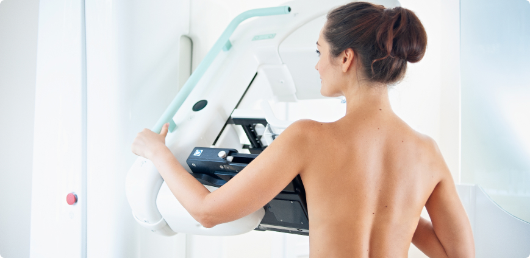

Актуальность
Своевременная диагностика играет важную роль в профилактике и лечении, раннем выявлении доброкачественной и злокачественной патологии молочных желез. Продолжает отмечаться неуклонный рост заболеваний молочных желез вне зависимости от возраста. Заболеваемость раком молочной железы продолжает расти и в Российской Федерации занимает 1 место среди других злокачественных патологий у лиц женской половины населения.
Причины патологических состояний молочных желез
Причин возникновения доброкачественной и злокачественной патологии достаточно много. Часто основой причиной выступают именно дисгормональные изменения, а также стрессы, дефицитные состояния и прочее. Дисгормональные изменения в организме происходят даже в период новорожденности, поэтому патологические состояния могут встречаться и в данном периоде ,причем как у мальчиков, так и у девочек. Стрессы, дефицитные состояния, патология других органов и систем ,которые напрямую связаны со здоровьем молочный железы, не имеют возрастных ограничений. Исходя из этого, патологические изменения в ткани молочных желез могут возникнуть в любом периоде жизни, а не строго после 18 -ти, 25-ти или 30-ти лет .
Когда начинать профилактические осмотры и обследования?
Идеальным периодом для начала профилактических осмотров и обследований считается именно период полового созревания, когда в организме происходят выраженные гормональные изменения. Уже в этот период у девочек в молочной железе появляется зачаток железистой ткани и по своей структуре от молочной железы репродуктивного возраста она отличается лишь соотношением железистого, фиброзного и жирового компонентов. Так как уже в период полового созревания у девочки в структуре есть железистая ткань либо ее зачаток, то именно с этого периода в ней также могут возникать изменения, тем более что процент пациенток подросткового возраста с жалобами на приемах становится больше. Идеально приучить свою дочь к профилактическим осмотрам именно с периода полового созревания, с целью снижения рисков новообразований в будущем
Частота и объем профилактических обследований в зависимости от возраста
- Ежегодно до 40 лет каждая девушка, женщина должна посещать Маммолога и проходить УЗИ молочных желез.
- После 40 лет 1 раз в 2 года каждой женщине необходимо проходить маммографический метод диагностики и 1 раз в год УЗИ молочных желез.
- После 50 лет маммографию необходимо выполнять 1 раз в год.
- В определенных ситуациях, по показаниям, Маммографию и/или УЗИ молочных желез необходимо выполнять чаще.
Маммография и УЗИ друг друга дополняют, а не заменяют. По УЗИ молочных желез мы можем оценить структуру лимфоузлов, кист и можем увидеть рентгеннегативные опухоли, которые не видны при Маммографии. Маммография дает возможность оценить нам наличие микрокальцинатов, которые очень сложно распознать по УЗИ. Если говорить про лучевую нагрузку, при прохождении маммографии, то она сопоставима и даже меньше, чем при перелете на самолете в течении 3-х часов.